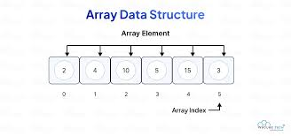
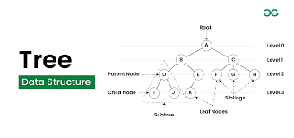
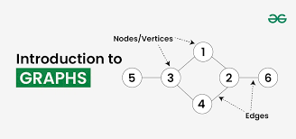

IntroDuction To C++
C++ is a powerful general-purpose programming language that was developed as an extensions of the C programmming language by Bjarne Stroustpup in the early 1980s. C++ is development, and applications that require high peformance.
Features of C++
- Ojbect Oriented: C++ supports object -oriented programming (oop) principles, allowing for the creation of class and objects . This helps in organizing code and prommaing .
- Rich Standard Libary: C++ provies a rich set of built-in functions and libaraies,which cansignificantly reduce the development time.
- Performance: C++ offers low-level memory manipulation, allowing developers to optimize peformance-crictical applications.
- Portability with c: C++ allowing for for the intergration of existing C code.
Basic Syntax
using namespace std;
int main(){
count << "hellow,world !"< < endl;
return 0;
}
- #include < iostream > This includes the input/output stream library, allowing the use of count for output and cin for input.
- using namespace std; This line alows access to the standard libarary features without preflixing them with std:;
- int main(); The entry point of every C++ program.
- cout Used for outputing data to the console.
- return 0:; Includes that the program has ended successfully.
Applications of c++
- System Software C++ in used in developing operating system - level application
- Game Development: Many game engines and games are written in C++ due to its perfomance and control over system resources.
- Embedded System: C++ is often used in programming embedded systems for devices like smartphnes, applications, and automotive systmes.
- Web Broswer Many broswer,like Google Chrome, use C++ for performance-critical components.
Online C++ Compiler
Introduction To Arrays
What is an Array?
An array is a data structure that stores a collection of elements, typically of elements, typically of the same data type. Arrays are used to store multiple values in a single variable, which allows for efficent data anagement and manipulation.

Charactersitics of Arrays
- Fixed Size: The size of an array is defined when it is created and cannot be changed.
- Indexed: Each element in an array is accessed using an index, which typically starts from 0.
- Homegenous Elements: All elements in an array must be of the same data type such as integers, floats, or strings.
Types of arrays
- One-Dimensional Arrays: A liner list of elements, where each element can be accessed by a single inces.
- Example: int numbers[5] ; (stores 5 integers).
-
Multi-Dimensional Arrays: Arrays with more than one dimension, commonly used for matrices and tables.
- Example: int matrix[3][3] : ( 3 * 3 matrix of integers)
- Dynamic Arrays: Arrays that can change size during program execution, typically implemnted using data structures like lists.
Tutorials for Array
Introduction to Tree
A tree is a hierarchical data structure that consists of nodes connected by edges. Each tree has a single root node at the top, from which all other nodes branch out. Nodes can have zero or more child nodes, and each child node can further branch out into more nodes. Trees. Tree are commonly used to represent hierachical relationship,s such as file systems or organizational structures.

Characteristics of Trees
- Root Node The topmost node in a tree, which has no parent,
- Child Node: A node that is a decendant of another node.
- Parent Node: A node that has one or more child nodes.
- Leaf Node: A node that has no children.
- Depth: the number of edges from the root to a specific node.
- Height:The number of edges on the longest path froma node to a leaf.
Types of Tree
- Binary Tree: Each node has at most has at most two children, referred to as the left and right children.
- Binary Search Tree(BST) . A binary tree where the left child contains only nodes with values less than the parent node, and the right child contains only nodes with value parers
- Avl Tree: A self-balancing binary search tree where the difference in heights between the left and right subtrees is at most one.
- Red-Black Tree : A balanced binary search tree with an additional property that ensures the tree remains balanced during instrions and deletions.
- Many tree: a tree in which a node can have at most N children.
Application of tree
- Data Storages: Trees are used in databases for indexing data and improving search performance .
- File System: Hierarchical file systems use tree structures to organize files and directories.
- Network Routing: Trees are used in routing algorithms to manage and optimize the flow of data across networks.
- Artifical Intelligence: Trees, such as decision trees, are ued in AI algorithems. for decision-making process.
Tutorial for Tree
Introduction to Graphs
A graph is a non-linear data structure used in C++ to model real-world relationships between objects, such as social networks, road maps, and computer networks. It consists of a set of vertices (or nodes) and a set of edges (connections) that link them.

Characteristics of Graphs
- Vertices (Nodes): The fundamental units of a graph, represening entities in the graph.
- Edges: Connections between pairs of vertices, which can be directed(one-way) or undirected(two-way).
- Degree: The number of edges connected to a vertex, which can be directed (one-way) or undirected (two-way).
- Path: A sequence of edges that connects a sequence of vertices
- Cycle: A path that starts and ends at the same vertex without repeating any edges.
Types of Graphs
- Directed Graph (Digraph): A graph where the edges have a direction, indicating the relationship flows from one vertex to another.
- Undirected Graph: A graph where the edges where the edges do not have a direction, indicating a two-way relationship between vertices.
- Weighted Graph: A graph where each edge has an associated weight or cost, often used to represent distances or costs in a network.
- Unweighted Graph: A graph where all edges has an associated weight or cost, often used to represent distances or costs in a network.
- Cyclic Graph: A graph that contains at least one cycle.
- Acyclic Graph: A graph that does not contain any cycles, such as a tree.
Applicaton of Graphs
- Social Networks: Graphs are used to model relationships and interactions between individuals or entities in social media platforms.
- Transportation Networks: Graphs represent roads, intersections and routes in transportion system, helping optimize travel and logics.
- Web page link analysis : The structure of the web can be represntend as a graph, with web pages as vertices and hyperlinkds as edges, enabling search engines to analysis
- 4. Network Flow. Graphs are utilized in flow networks to model the flow of resource, such as electricty or data. through a network